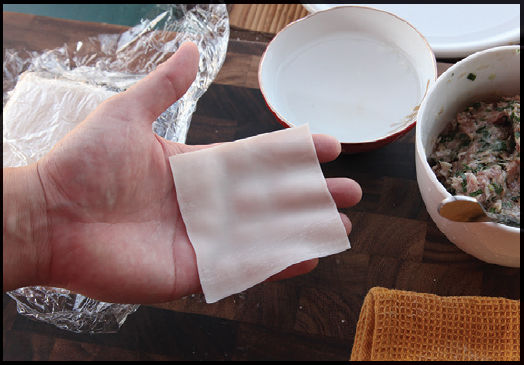
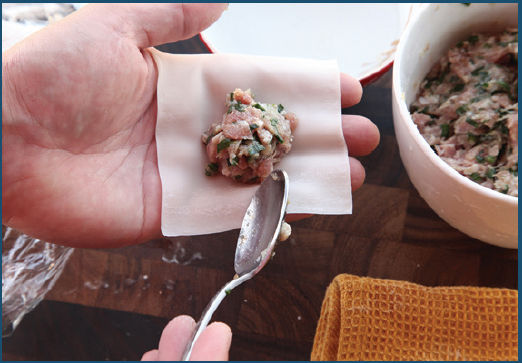
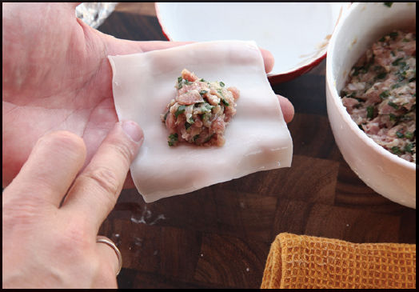
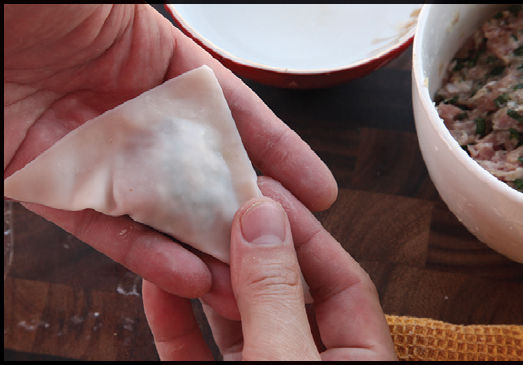
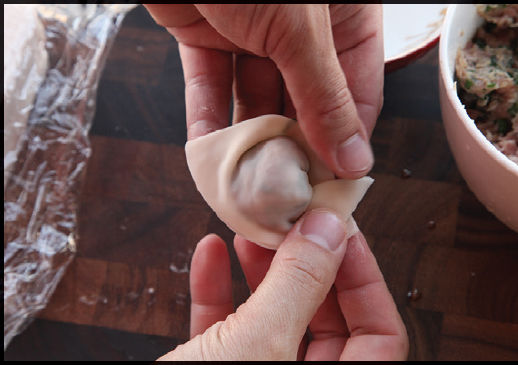
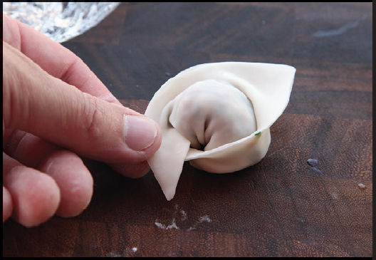
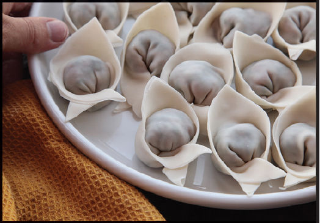

HOW TO MAKE WONTONS
The classic shape for wontons is what Fuchsia Dunlop refers to as “water caltrops” in her amazing book Every Grain of Rice (order it now if you don’t own it already!). It’s made by forming a triangle and folding the two “arms” of the triangle across each other (choushou, the Sichuanese term for these wontons, translates as “folded arms”).
To form the wontons, place a tablespoon or so of filling in the center of the wonton square.
Here’s how it’s done:
Step 1 • Place Your Wrapper

To stuff, hold a square wonton wrapper in your hand or leave it flat on your cutting board.
Step 2 • Place Your Filling

Add about a tablespoon of filling to the center of the wrapper (the less you use, the easier it’ll be to stuff), then place a single shrimp on top of the filling (if using).
Step 3 • Moisten the Edges

Use your fingertip to add a thin layer of water all around the edges of the wrapper.
Step 4 • Pinch It Up

Pull two corners together and pinch them shut to form a triangle, then seal up the edges of the triangle, making sure to push out as much air as possible to prevent a blowout when you boil them later.
Step 5 • Make the Corners Meet

Moisten the folded corners, then pull them toward each other, making them meet and cross in the center.
The most common mistake I see is to fold the arms across the “belly” of the wonton so that you end up with something nearly cylindrical. Instead, the arms should be pulled downward away from the pointed end of the triangle. This plumps up the belly and creates a crescent shape that’s much better suited to picking up sauce.
Step 6 • Ready to Cook

The finished wonton should be plump, like a little sphere wearing a cape.
Step 7 • Repeat

Repeat until you’ve made all your wontons. They can be frozen for future use by placing them on a parchment-lined plate in the freezer. Once fully frozen, they can be stored in a plastic zipper-lock bag. Wontons can be cooked directly from frozen.